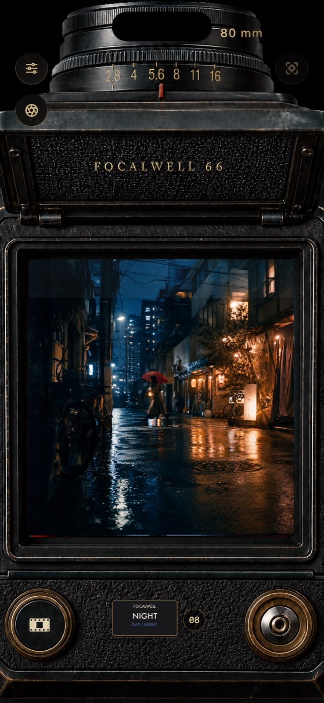

FocalWell, bel hizasından bakılan klasik bir orta format kameranın çekim deneyimini iOS'a taşır: kare vizör, kırk sekiz film emülsiyonu, deklanşörden sonra beklemeniz gereken gerçek bir banyo süreci ve kontakt tabaka görünümünde bir galeri.
Uygulama tamamen çevrimdışı çalışır. Hiçbir veri toplamaz.
Gizlilik politikası
Kullanım koşulları